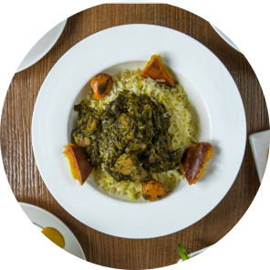
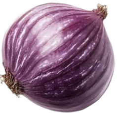
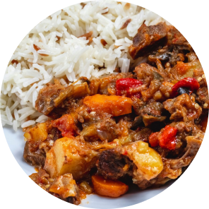
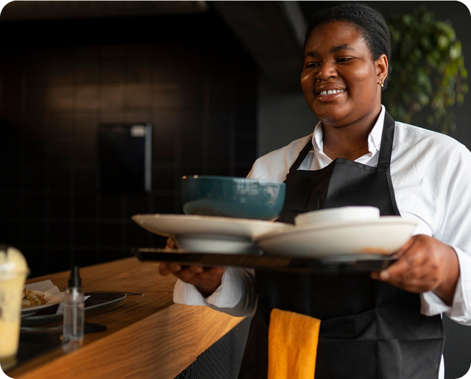

Every Meal Brings
Good Home Nostalgia
Since 1983, Mama Cass has been about more than food it's about
bold Nigerian flavors,
tradition, and soulful nourishment.


Our Journey
Back in November 1983, most Nigerians saw dining out as either foreign fast food or roadside stalls. Mama Cass changed that by bringing a true taste of home to the table.
We began with a simple mission: to serve authentic, home-cooked N and also an individual high also response our real state so I'll do something since I think I think you haveigerian meals to busy city professionals and families who wanted real comfort food without the wait.
Mama Cass is more than just food, it's a way to relive special moments. From smoky Jollof rice to soft pounded yam and our unique Ofada rice, every dish takes you back to those warm Sundays with family and joyful village celebrations. Each meal is a proud reminder of Nigeria's rich culinary heritage.

Our Mission
Our mission is to serve fresh dishes with a twist, creating a welcoming space where people connect over good food and warm hospitality
Our Vision
To be the destination for fresh and exciting food that creates a welcoming space and feels like home.
Our People Make the Difference
At Mama Cass, we call our team caregivers, because they do more than serve food. From the chefs in the kitchen to the servers in the dining room, they bring warmth, energy, and pride to every plate.